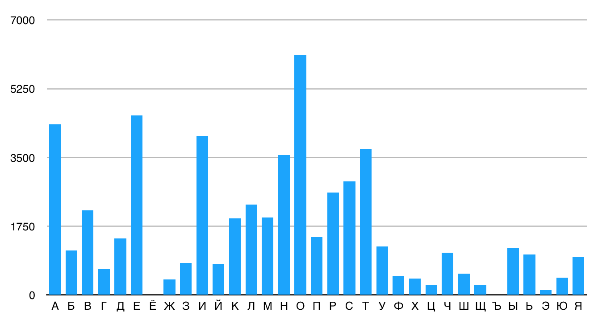
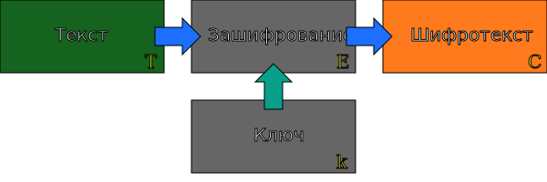
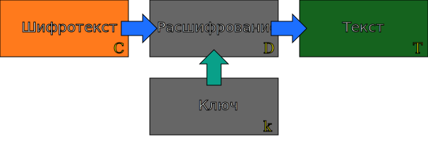
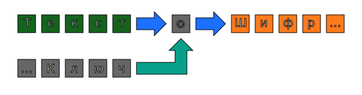

Эта работа предназначена для людей, не имеющих представления о криптографии — разделе математики, изучающем обеспечение конфиденциальности, целостности и проверку подлинности текстов. Я постарался объяснять материал простым языком, иногда поверхностно, но по возможности оставлять ссылки на дополнительные материалы. В первой части текста будут описаны некоторые криптографические примитивы, простые элементы, из которых впоследствии получаются более сложные конструкции, протоколы. Они будут описаны во второй части.
Криптографические примитивы
Мы будем говорить о трех примитивах: симметричном шифровании, аутентификации сообщений и ассиметричном шифровании. Из них вырастает очень много протоколов. Также мы обсудим, как вырабатываются ключи шифрования.
Одним из фундаменальных принципов криптографии является принцип Керкгоффса, который гласит, что криптографическая система должна сохранять в секрете только криптографические ключи. Система должна оставаться стойкой, даже если все детали её функционирования, кроме ключей, раскрыты.
Поэтому, лучшие современные коммерчески доступные системы шифрования построены из компонент, устройство и принцип работы которых хорошо известны. Единственная секретная вещь в них — ключ шифрования. Более того, алгоритмы AES и SHA, которые будут рассмотрены ниже, входят в список Suite B Агентства Национальной Безопасности США и применимы для защиты секретной информации. В общем, секретность алгоритма редко является преимуществом с точки зрения его безопасности. Не доверяйте системам, построенным на секретных алгоритмах.
Немного истории
Исторически, начиная, примерно с IV века до нашей эры, существовало два метода дизайна шифров: шифры подстановки и перестановки. Шифры подстановки — алгоритм, где в те времена заменяли одну букву сообщения на другую по какому-то принципу. Простой шифр подстановки — по таблице: берем таблицу, где написано, что А меняем на Я, Б на Ю и т. д. Дальше по этой таблице шифруем, по ней же дешифруем.
Попробуем оценить, насколько сложен этот алгоритм с точки зрения размера пространства ключей. Сколько вариантов ключей существует? Чтобы ответить на этот вопрос, расмотрим, как мы строим таблицу замен. Допустим, есть таблица на 33 символа. Букву «А» можем заменить на любой из них, букву «Б» — на любой из оставшихся 32, «В» — на любой из оставшихся. Получаем 33*32*31… — то есть факториал от 33. Факториал размерности алфавита. Формально, log233!≈123, такой алгоритм имеет простраство ключей около 123 бит. В настоящее время считаются приемлемыми размеры ключей больше 100 бит. Иначе говоря, по этому признаку алгоритм мог бы считаться вполне надёжным. При этом, все, наверное, сталкивались с детстве с простой заменой и знают, что атака на него тривиальна.
Помимо шифра простой подстановки существовало и много других вариантов. Одним из них, еще более примитивным, является шифр Цезаря, где таблица формируется не случайной перестановкой символов, а сдвигом на три символа: А меняется на D, B на Е и т. д. Понятно, что шифр Цезаря вместе со всеми его вариантами перебрать очень легко: в отличие от табличной подстановки, в ключе Цезаря всего 25 вариантов при 26 буквах в алфавите — не считая тривиального шифрования самого в себя. И его как раз можно перебрать полным перебором.
Почему шифр табличной подстановки такой простой? Откуда возникает проблема, при которой мы можем легко, даже не зная ничего про криптографию, расшифровать табличную подстановку? Дело в частотном анализе. В текстах на русском языке, самые распространённые буквы — О, Е, А, И. Эта статистика видна даже в небольших текстах. Существуют и негативные пары, никогда не встречающиеся в естественных языках, — что-то вроде ЬЪ.
На графике ниже показано расределение букв в одной из версий этого текста.
Поскольку простая подстановка не изменит статистику распределения букв, можно легко увидеть, в какие буквы превратились самые распространённые буквы открыторого текста. При ручной дешифровке достаточно правильно расшифровать десяток букв для того, чтобы текст стал читаемым.
Как решить эту проблему? Надо исказить статистику распределения букв, чтобы распространенные буквы не так светились в зашифрованном тексте. Очевидный способ: давайте будем шифровать самые часто встречающиеся буквы не в один символ, а в пять разных, например. Если буква встречается в среднем в пять раз чаще, то давайте по очереди — сначала в первый символ будем зашифровывать, потом во второй, в третий и т. д. Далее у нас получится маппинг букв не 1 к 1, а, условно, 26 к 50. Статистика, таким образом, нарушится. Такой шифр называется полиалфавитным. Однако с ним есть довольно много проблем, а главное, очень неудобно работать с таблицей.
Дальше придумали: давайте не будем шифровать такими таблицами, а попробуем брать шифр Цезаря и для каждой следующей буквы изменять сдвиг. Результат — шифр Виженера.
Берем в качестве ключа слово ВАСЯ. Берем сообщение МАША. Задействуем шифр Цезаря, но отсчитывая от этих букв. Например, В — третья буква в алфавите. Мы должны сдвинуть на три буквы соответствующую букву в открытом тексте. М сдвигается в О. А в А. Ш — на 19, Й. Я сдвинет А в Я. ОАЙЯ.
Что удобно в получившемся шифре? Здесь было две одинаковых буквы, но в результате они зашифровались в разные. Это классно, потому что размывает статистику. Метод хорошо работал, пока где-то в XIX веке, буквально недавно на фоне истории криптографии, не придумали, как его ломать. Если посмотреть на сообщение из нескольких десятков слов, а ключ довольно короткий, то вся конструкция выглядит как несколько шифров Цезаря. Мы говорим: окей, давайте каждую четвертую букву — первую, пятую, девятую — рассматривать как шифр Цезаря. И поищем среди них статистические закономерности. Мы обязательно их найдем. Потом возьмем вторую, шестую, десятую и так далее. Опять найдем. Тем самым мы восстановим ключ. Единственная проблема — понять, какой он длины. Это не очень сложно, ну какой он может быть длины? Ну 4, ну 10 символов. Перебрать 6 вариантов от 4 до 10 не очень сложно. Простая атака — она была доступна и без компьютеров, просто за счет ручки и листа бумаги.
Как из этой штуки сделать невзламываемый шифр? Взять ключ размера текста. Клод Шеннон в 1949 году, написал классическую работу по криптографии как по разделу математики, где сформулировал теорему. Длина ключа равна длине сообщения — он использовал XOR вместо сложения по модулю, равному длине алфавита, но в данной ситуации это не очень принципиально. Ключ сгенерирован случайным образом, является последовательностью случайных бит, и на выходе тоже получится случайная последовательность бит. Теорема: если у нас есть такой ключ, то подобная конструкция является абсолютно стойкой. Доказательство не очень сложное, но сейчас не буду про него говорить.
Важно, что можно создать невзламываемый шифр, но у него есть недостатки. Во-первых, ключ должен быть абсолютно случайным. Во-вторых, он никогда не должен использоваться повторно. В-третьих, длина ключа должна быть равна длине сообщения. Почему нельзя использовать один и тот же ключ для шифровки разных сообщений? Потому что, перехватив этот ключ в следующий раз, можно будет расшифровать все сообщения? Нет. В первых символах будет виден шифр Цезаря? Не очень понял. Кажется, нет.
Возьмем два сообщения: МАША, зашифрованная ключом ВАСЯ, и другое слово, у которого ключ тоже был ВАСЯ, — ВЕРА. Получим примерно следующее: ЗЕШЯ. Сложим два полученных сообщения, причем так, чтобы два ключа взаимно удалились. В итоге получим лишь разницу между осмысленным шифротекстом и осмысленным шифротекстом. На XOR это делается удобнее, чем на сложении по длине алфавита, но разницы практически никакой.
Если мы получили разницу между двумя осмысленными шифротекстами, то дальше, как правило, становится намного легче, поскольку у текстов на естественном языке высокая избыточность. Зачастую мы можем догадаться, что происходит, делая разные предположения, гипотезы. А главное, что каждая верная гипотеза будет раскрывать нам кусочек ключа, а значит и кусочки двух шифротекстов. Как-то так. Поэтому плохо.
Помимо шифров подстановки, были еще шифры перестановки. С ними тоже все довольно просто. Берем сообщение ВАСЯИ, записываем его в блок какой-то длины, например в ДИДОМ, и считываем результат так же.
Не бог весть какая штука. Как ее ломать, тоже понятно — переберем все возможные варианты перестановок. Тут их не очень много. Берем длину блока, подбираем и восстанавливаем.
В качестве следующей итерации был выбран такой способ: возьмем все то же самое, а сверху напишем какой-нибудь ключ — СИМОН. Переставим столбцы так, чтобы буквы оказались в алфавитном порядке. В итоге получим новую перестановку по ключу. Она уже намного лучше старой, поскольку количество перестановок намного больше и подобрать ее не всегда легко.
Каждый современный шифр тем или иным способом базируется на этих двух принципах — подстановки и перестановки. Сейчас их использование намного более сложное, но сами базовые принципы остались прежними.
Симметричные шифры
Первый криптографический примитив — симметричные шифры.
Базовый принцип их работы относительно несложен. У нас есть какой-то алгоритм, на вход которого поступает открытый текст и нечто, называемое ключом, какое-то значение. На выходе получается зашифрованное сообщение. Можно записать C=Ek(T).
Когда мы хотим его дешифровать, важно, чтобы мы брали тот же самый ключ. И, применяя его в другом алгоритме, алгоритме расшифровки, мы из шифротекста получаем наш открытый текст назад: T=Dk(C).
Какие здесь важные нюансы? В большинстве распространенных алгоритмов симметричного шифрования, с которыми можно столкнуться, размер шифротекста всегда равен размеру открытого текста. Современные алгоритмы шифрования оперируют размерами ключей. Размер ключей измеряется в битах. Для современных алгоритмов симметричного шифрования, обеспечивающих долговременную секретность, размер ключа обычно равен 128 или 256 битам.

Если говорить про современные шифры, они делятся на две категории: поточные и блочные. Поточный шифр устроен так, что фактически представляет собой генератор случайных чисел, выход которого мы складываем по модулю 2, «ксорим», с нашим шифротекстом, как видно у меня на слайде. Ранее я сказал: если длина получившегося ключевого потока — она же ключ — абсолютно случайная, никогда повторно не используется и ее длина равна длине сообщения, то у нас получился абсолютно стойкий шифр, невзламываемый.
Возникает вопрос: как сгенерировать на такой шифр случайный, длинный и вечный ключ? Как вообще работают поточные шифры? По сути, они представляют собой генератор случайного числа на основе какого-то начального значения. Начальное значение и является ключом шифра, ответом.
Из этой истории есть одно занятное исключение — шифроблокноты. Речь идет о настоящей шпионской истории про настоящий шпионаж. Некие люди, которым нужна абсолютно устойчивая коммуникация, генерируют случайные числа — например, буквальным бросанием кубика или буквальным выниманием шаров из барабана, как в лото. Создают два листа, где печатают эти случайные числа. Один лист отдают получателю, а второй оставляют у отправителя. При желании пообщаться они используют этот поток случайных чисел в качестве ключевого потока. Нет, история взята не из совсем далекого прошлого. У меня есть настоящий радиоперехват от 15 октября 2014 года: 7 2 6, 7 2 6, 7 2 6. Это позывной. 4 8 3, 4 8 3, 4 8 3. Это номер шифроблокнота. 5 0, 5 0, 5 0. Это количество слов. 8 4 4 7 9 8 4 4 7 9 2 0 5 1 4 2 0 5 1 4 и т. д. 50 таких числовых групп. Не знаю где, где-то не в России сидел какой-нибудь человек с ручкой и карандашом у обычного радиоприемника и записывал эти цифры. Записав их, он достал похожую штуку, сложил их по модулю 10 и получил свое сообщение. Другими словами, это реально работает, и подобное сообщение нельзя взломать. Если действительно были сгенерированы хорошие случайные числа и он впоследстии сжег бумажку с ключом, то осуществить взлом нельзя никак, совсем.
Но тут есть довольно много проблем. Первая — как нагенерировать по-настоящему хорошие случайные числа. Мир вокруг нас детерминирован, и если мы говорим про компьютеры, они детерминированы полностью.
Во-вторых, доставлять ключи такого размера… если мы говорим про передачу сообщений из 55 цифровых групп, то проделать подобное не очень сложно, а вот передать несколько гигабайт текста — уже серьезная проблема. Следовательно, нужны какие-нибудь алгоритмы, которые, по сути, генерируют псевдослучайные числа на основе какого-нибудь небольшого начального значения и которые могли бы использоваться в качестве таких потоковых алгоритмов.
Шифр Salsa20
Одним из современных шифров, работающих по такому принципу, является алгоритм Salsa. Он разработан Дэном Берштайном, который также известен, как автор qmail.

Блок-схема шифра Salsa сложная, но он обладает несколькими интересными и классными свойствами. Для начала, он всегда выполняется за конечное время, каждый его раунд, что немаловажно для защиты от тайминг-атак. Это такие атаки, где атакующий наблюдает поведение системы шифрования, скармливая ей разные шифротексты или разные ключи за этим черным ящиком. И, понимая изменения во времени ответа или в энергопотреблении системы, он может делать выводы о том, какие именно процессы произошли внутри. Если вы думаете, что атака сильно надуманная, это не так. Очень широко распространены атаки подобного рода на смарт-карты — очень удобные, поскольку у атакующего есть полный доступ к коробке. Единственное, что он, как правило, не может в ней сделать, — прочитать сам ключ. Это сложно, а делать все остальное он может — подавать туда разные сообщения и пытаться их расшифровать.
Salsa20 устроен так, чтобы он всегда выполнялся за константное одинаковое время. Внутри он состоит всего из трех примитивов: это сдвиг на константное время, а также сложение по модулю 2 и по модулю 32, 32-битных слов. Скорость Salsa20 выше, чем у AES. Он пока что не получил такого широкого распространения в общепринятой криптографии — у нас нет cipher suite для TLS, использующих Salsa20, — но все равно потихоньку становится мейнстримом. Указанный шифр стал одним из победителей конкурса eSTREAM по выбору лучшего поточного шифра. Их там было четыре, и Salsa — один из них. Он потихоньку начинает появляться во всяких опенсорс-продуктах. В частности, в RFC7539 описана AEAD конструкция на основе ChaCha20, потомка шифра Salsa20 и аутентификатора Poly1305. В RFC7905 описано использование этой конструкции в TLS.
На него имеется некоторое количество криптоанализа, есть даже атаки. Снаружи он выглядит как поточный, генерируя на основе ключа последовательность почти произвольной длины, 264. Зато внутри он работает как блочный. В алгоритме есть место, куда можно подставить номер блока, и он выдаст указанный блок.
Какая проблема с поточными шифрами? Если у вас есть поток данных, передаваемый по сети, поточный шифр для него удобен. К вам влетел пакет, вы его зашифровали и передали. Влетел следующий — приложили эту гамму и передали. Первый байт, второй, третий по сети идут. Удобно.
Если данные, например гигабайтный файл целиком, зашифрованы на диске поточным шифром, то чтобы прочитать последние 10 байт, вам нужно будет сначала сгенерировать гаммы потока шифра на 1 гигабайт, и уже из него взять последние 10 байт. Очень неудобно.
В Salsa указанная проблема решена, поскольку в нем на вход поступает в том числе и номер блока, который надо сгенерировать. Дальше к номеру блока 20 раз применяется алгоритм. 20 раундов — и мы получаем 512 бит выходного потока.
Самая успешная атака — в 8 раундов. Сам он 256-битный, а сложность атаки в 8 раундов — 250 или 251 бит. Считается, что он очень устойчивый, хороший. Публичный криптоанализ на него есть. Несмотря на всю одиозность личности Берштайна в этом аспекте, мне кажется, что штука хорошая и у нее большее будущее.
Исторически поточных шифров было много. Они первые не только в коммерческом шифровании, но и в военном. Там использовалось то, что называлось линейными регистрами сдвига.
Какие тут проблемы? Первая: в классических поточных шифрах, не в Salsa, чтобы расшифровать последнее значение гигабайтного файла, последний байт, вам нужно сначала сгенерировать последовательность на гигабайт. От нее вы задействуете только последний байт. Очень неудобно.
Поточные шифры плохо пригодны для систем с непоследовательным доступом, самый распространенный пример которых — жесткий диск.
Есть и еще одна проблема, о ней мы поговорим дальше. Она очень ярко проявляется в поточных шифрах. Две проблемы в совокупности привели к тому, что здорово было бы использовать какой-нибудь другой механизм.
Шифр DES
Другой механизм для симметричного шифрования называется блочным шифром. Он устроен чуть по-другому. Он не генерирует этот ключевой поток, который надо ксорить с нашим шифротекстом, а работает похоже — как таблица подстановок. Берет блок текста фиксированной длины, на выходе дает такой же длины блок текста, и всё.
Размер блока в современных шифрах — как правило, 128 бит. Бывают разные вариации, но как правило, речь идет про 128 или 256 бит, не больше и не меньше. Размер ключа — точно такой же, как для поточных алгоритмов: 128 или 256 бит в современных реализациях, от и до.
Из всех широко распространенных блочных шифров сейчас можно назвать два — DES и AES. DES очень старый шифр, ровесник RC4. У DES сейчас размер блока — 64 бита, а размер ключа — 56 бит. Создан он был в компании IBM под именем Люцифер. Когда в IBM его дизайном занимался Хорст Фейстель, они предложили выбрать 128 бит в качестве размера блока. А размер ключа был изменяемый, от 124 до 192 бит.
Когда DES начал проходит стандартизацию, его подали на проверку в том числе и в АНБ. Оттуда он вернулся с уменьшенным до 64 бит размером блока и уменьшенным до 56 бит размером ключа.
Свойства DES
- Сеть Фейстеля
- Размер блока — 64 бита
- Размер ключа — 56 бит
- 16 раундов

20 лет назад вся эта история наделала много шума. Все говорили — наверняка они туда встроили закладку, ужасно, подобрали такой размер блока, чтобы получить возможность атаковать. Однако большое достоинство DES в том, что это первый шифр, который был стандартизован и стал тогда основой коммерческой криптографии.
Его очень много атаковали и очень много исследовали. Есть большое количество всевозможных атак. Но ни одной практически реализуемой атаки до сих пор нет, несмотря на его довольно почтенный возраст. Единственное, размер ключа в 56 бит сейчас просто неприемлемый и можно атаковать полным перебором.
Как устроен DES? Фейстель сделал классную штуку, которую называют сетью Фейстеля. Она оперирует блоками. Каждый блок, попадающий на вход, делится на две части: левую и правую. Левая часть становится правой без изменений. Правая часть ксорится с результатом вычисления некой функции, на вход которой подается левая часть и ключ. После данного преобразования правая часть становится левой.

У нее есть несколько интересных достоинств. Первое важное достоинство: функция F может быть любой. Она не должна обладать свойствами обратимости, она может и не быть линейной или нелинейной. Все равно шифр остается симметричным.
Второе очень удобное свойство: расшифровка устроена так же, как шифрование. Если нужно расшифровать данную сеть, вы в прежний механизм вместо открытого текста засовываете шифротекст и на выходе вновь получаете открытый текст.
Почему это удобно? 30 лет назад удобство являлось следствием того, что шифраторы были аппаратными и заниматься дизайном отдельного набора микросхем для шифрования и для расшифровки было трудоемко. А в такой конструкции все очень здорово, фактически мы можем один блок использовать для разных задач.
В реальной ситуации такая конструкция — один раунд блочного шифра, то есть в реальном шифре она выполняется 16 раз с разными ключами. На каждом 16 раунде генерируется отдельный ключ и 16 раундовых подключей, каждый из которых применяется на каждом раунде для функции F.
Раунд тоже выглядит довольно несложно — он состоит всего из двух-трех операций. Первая операция: размер попавшегося полублока становится равен 32 бита, полубок проходит функцию расширения, на вход попадает 32 бита. Дальше мы по специальной несекретной таблице немного добавляем к 32 битам, превращая их в 48: некоторые биты дублируются и переставляются, такая гребеночка.
Потом мы его ксорим с раундовым ключом, размер которого — тоже 48 бит, и получаем 48-битное значение.
Затем оно попадает в набор функций, которые называются S-боксы и преобразуют каждый бит входа в четыре бита выхода. Следовательно, на выходе мы из 48 бит снова получаем 32 бита.
И наконец, окончательная перестановка P. Она опять перемешивает 32 бита между собой. Все очень несложно, раундовая функция максимально простая.
Самое интересное ее свойство заключается в указанных S-боксах: задумано очень сложное превращение 6 бит в 4. Если посмотреть на всю конструкцию, видно, что она состоит из XOR и пары перестановок. Если бы S-боксы были простыми, весь DES фактически представлял бы собой некоторый набор линейных преобразований. Его можно было бы представить как матрицу, на которую мы умножаем наш открытый текст, получая шифротекст. И тогда атака на DES была бы тривиальной: требовалось бы просто подобрать матрицу.
Вся нелинейность сосредоточена в S-боксах, подобранных специальным образом. Существуют разные анекдоты о том, как именно они подбирались. В частности, примерно через 10 лет после того, как DES был опубликован и стандартизован, криптографы нашли новый тип атак — дифференциальный криптоанализ. Суть атаки очень простая: мы делаем мелкие изменения в открытом тексте — меняя, к примеру, значение одного бита с 0 на 1 — и смотрим, что происходит с шифротекстом. Выяснилось, что в идеальном шифре изменение одного бита с 0 на 1 должно приводить к изменению ровно половины бит шифротекста. Выяснилось, что DES, хоть он и был сделан перед тем, как открыли дифференциальный криптоанализ, оказался устойчивым к этому типу атак. В итоге в свое время возникла очередная волна паранойи: мол, АНБ еще за 10 лет до открытых криптографов знало про существование дифференциального криптоанализа, и вы представляете себе, что оно может знать сейчас.
Анализу устройства S-боксов посвящена не одна сотня статей. Есть классные статьи, которые называются примерно так: особенности статистического распределения выходных бит в четвертом S-боксе. Потому что шифру много лет, он досконально исследован в разных местах и остается достаточно устойчивым даже по нынешним меркам.
56 бит сейчас уже можно просто перебрать на кластере машин общего назначения — может, даже на одном. И это плохо. Что можно предпринять?
Просто сдвинуть размер ключа нельзя: вся конструкция завязана на его длину. Triple DES. Очевидный ответ был таким: давайте мы будем шифровать наш блок несколько раз, устроим несколько последовательных шифрований. И здесь всё не слишком тривиально.
Допустим, мы берем и шифруем два раза. Для начала нужно доказать, что для шифрований k1 и k2 на двух разных ключах не существует такого шифрования на ключе k3, что выполнение двух указанных функций окажется одинаковым. Здесь вступает в силу свойство, что DES не является группой. Тому существует доказательство, пусть и не очень тривиальное.
Окей, 56 бит. Давайте возьмем два — k1 и k2. 56 + 56 = 112 бит. 112 бит даже по нынешним меркам — вполне приемлемая длина ключа. Можно считать нормальным всё, что превышает 100 бит. Так почему нельзя использовать два шифрования, 112 бит?
Одно шифрование DES состоит из 16 раундов. Сеть применяется 16 раз. Изменения слева направо происходят 16 раз. И он — не группа. Есть доказательство того, что не существует такого ключа k3, которым мы могли бы расшифровать текст, последовательно зашифрованный выбранными нами ключами k1 и k2.
Есть атака. Давайте зашифруем все возможные тексты на каком-нибудь ключе, возьмем шифротекст и попытаемся его расшифровать на всех произвольных ключах. И здесь, и здесь получим 256 вариантов. И где-то они сойдутся. То есть за два раза по 256 вариантов — плюс память для хранения всех расшифровок — мы найдем такую комбинацию k1 и k2, при которых атака окажется осуществимой.
Эффективная стойкость алгоритма — не 112 бит, а 57, если у нас достаточно памяти. Нужно довольно много памяти, но тем не менее. Поэтому решили — так работать нельзя, давайте будем шифровать три раза: k1, k2, k3. Конструкция называется Triple DES. Технически она может быть устроена по-разному. Поскольку в DES шифрование и дешифрование — одно и то же, реальные алгоритмы иногда выглядят так: зашифровать, расшифровать и снова расшифровать — чтобы выполнять операции в аппаратных реализациях было проще.
Наша обратная реализация Triple DES превратится в аппаратную реализацию DES. Это может быть очень удобно в разных ситуациях для задачи обратной совместимости.
Где применялся DES? Вообще везде. Его до сих пор иногда можно пронаблюдать для TLS, существуют cipher suite для TLS, использующие Triple DES и DES. Но там он активно отмирает, поскольку речь идет про софт. Софт легко апдейтится.
А вот в банкоматах он отмирал очень долго, и я не уверен, что окончательно умер. Не знаю, нужна ли отдельная лекция о том, как указанная конструкция устроена в банкоматах. Если коротко, клавиатура, где вы вводите PIN, — самодостаточная вещь в себе. В нее загружены ключи, и наружу она выдает не PIN, а конструкцию PIN-блок. Конструкция зашифрована — например, через DES. Поскольку банкоматов огромное количество, то среди них много старых и до сих пор можно встретить банкомат, где внутри коробки реализован даже не Triple DES, а обычный DES.
Шифр AES
Однажды DES стал показывать свой возраст, с ним стало тяжело, и люди решили придумать нечто поновее. Американская контора по стандартизации, которая называется NIST, сказала: давайте проведем конкурс и выберем новый классный шифр. Им стал AES.
DES расшифровывается как digital encrypted standard. AES — advanced encrypted standard. Размер блока в AES — 128 бит, а не 64. Это важно с точки зрения криптографии. Размер ключа у AES — 128, 192 или 256 бит. В AES не используется сеть Фейстеля, но он тоже многораундовый, в нем тоже несколько раз повторяются относительно примитивные операции. Для 128 бит используется 10 раундов, для 256 — 14.
Сейчас покажу, как устроен каждый раунд. Первый и последний раунды чуть отличаются от стандартной схемы — тому есть причины.
Как и в DES, в каждом раунде AES есть свои раундовые ключи. Все они генерируются из ключа шифрования для алгоритма. В этом месте AES работает так же, как DES. Берется 128-битный ключ, из него генерируется 10 подключей для 10 раундов. Каждый подключ, как и в DES, применяется на каждом конкретном раунде.
Каждый раунд состоит из четырех довольно простых операций. Первый раунд — подстановка по специальной таблице.
В AES мы строим байтовую матрицу размером 4 на 4. Каждый элемент матрицы — байт. Всего получается 16 байт или 128 бит. Они и составляют блок AES целиком.
Вторая операция — побайтовый сдвиг.
Устроен он несложно, примитивно. Мы берем матрицу 4 на 4. Первый ряд остается без изменений, второй ряд сдвигается на 1 байт влево, третий — на 2 байта, четвертый — на 3, циклично.
Далее мы производим перемешивание внутри колонок. Это тоже очень несложная операция. Она фактически переставляет биты внутри каждой колонки, больше ничего не происходит. Можно считать ее умножением на специальную функцию.
Четвертая, вновь очень простая операция — XOR каждого байта в каждой колонке с соответствующим байтом ключа. Получается результат.
В первом раунде лишь складываются ключи, а три других операции не используются. В последнем раунде не происходит подобного перемешивания столбцов:
Дело в том, что это не добавило бы никакой криптографической стойкости и мы всегда можем обратить последний раунд. Решили не тормозить конструкцию лишней операцией.
Мы повторяем 4 описанных шага 10 раз, и на выходе из 128-битного блока снова получаем 128-битный блок.
Какие достоинства у AES? Он оперирует байтами, а не битами, как DES. AES намного быстрее в софтовых реализациях. Если сравнить скорость выполнения AES и DES на современной машине, AES окажется в разы быстрее, даже если говорить о реализации исключительно в программном коде.
Производители современных процессоров, Intel и AMD, уже разработали ассемблерные инструкции для реализации AES внутри чипа, потому что стандарт довольно несложный. Как итог — AES еще быстрее. Если через DES на современной машинке мы можем зашифровать, например, 1-2 гигабита, то 10-гигабитный AES-шифратор находится рядом и коммерчески доступен обычным компаниям.
Режимы шифрования
Блочный алгоритм шифрует блок в блок. Он берет блок на 128 или 64 бита и превращает его в блок на 128 или 64 бита.
А что мы будем делать, если потребуется больше, чем 16 байт?
Первое, что приходит в голову, — попытаться разбить исходное сообщение на блоки, а блок, который останется неполным, дополнить стандартной, известной и фиксированной последовательностью данных.
Да, очевидно, побьем всё на блоки по 16 байт и зашифруем. Такое шифрование называется ECB — electronic code book, когда каждый из блоков по 16 байт в случае AES или по 8 байт в случае DES шифруется независимо.

Шифруем каждый блок, получаем шифротекст, складываем шифротексты и получаем полный результат.

Примерно так выглядит картинка, зашифрованная в режиме ECB. Даже если мы представим себе, что шифр полностью надежен, кажется, что результат менее чем удовлетворительный. В чем проблема? В том, что это биективное отображение. Для одинакового входа всегда получится одинаковый выход, и наоборот — для одинакового шифротекста всегда получится одинаковый открытый текст.
Надо бы как-нибудь исхитриться и сделать так, чтобы результат на выходе все время получался разным, в зависимости от местонахождения блока — несмотря на то, что на вход подаются одинаковые блоки шифротекста. Первым способом решения стал режим CBC.

Мы не только берем ключ и открытый текст, но и генерируем случайное число, которое не является секретным. Оно размером с блок. Называется оно инициализационным вектором.
При шифровании первого блока мы берем инициализационный вектор, складываем его по модулю 2 с открытым текстом и шифруем. На выходе — шифротекст. Дальше складываем полученный шифротекст по модулю 2 со вторым блоком и шифруем. На выходе — второй блок шифротекста. Складываем его по модулю 2 с третьим блоком открытого текста и шифруем. На выходе получаем третий блок шифротекста. Здесь видно сцепление: мы каждый следующий блок сцепляем с предыдущим.
В результате получится картинка, где всё, начиная со второго блока, равномерно размазано, а первый блок каждый раз зависит от инициализационного вектора. И она будет абсолютно перемешана. Здесь все неплохо.
Однако у CBC есть несколько проблем.
О размере блока. Представьте: мы начали шифровать и, допустим, у нас DES. Если бы DES был идеальным алгоритмом шифрования, выход DES выглядел бы как равномерно распределенные случайные числа длиной 64 бита. Какова вероятность, что в выборке из равномерно распределенных случайных чисел длиной 64 бита два числа совпадут для одной операции? 1/(264). А если мы сравниваем три числа? Давайте пока прервемся.
Какое прикладное значение имеет указанный научный факт? Выход функции шифрования можно рассматривать как случайное число, и
идеальная функция шифрования неотличима от случайного числа. Значит, если мы рассматриваем блоки, зашифрованные, например,
алгоритмом DES или ГОСТ-28147, то взяв 232 таких блоков, мы с вероятностью ½ обнаружим, что два из них зашифрованы
одинаково.
Давайте кто-то посчитает: 232 блоков размером 64 бита или 8 байт — это сколько? 32 гигабайта? Похоже на правду.
Теперь поделим 32 гигабайта на 10 гигабит. Если у нас есть алгоритм шифрования с 64-битными блоками, то чуть позже, чем через 32
секунды, мы увидим коллизию. Мы увидим два блока, которые зашифровались одинаково. Как выяснили в СВС, указанные два блока
необязательно должны быть с одинаковым открытым текстом. Открытый текст может быть разным.
Что это будет значить? Если у нас есть какой-то блок Ci, то что было зашифровано в режиме СВС?
Допустим, мы пронаблюдали коллизию через 30 секунд. Две части равны. Шифрование является взаимно однозначным соответствием. Таким образом, раз функции шифрования равны, то подшифрование тоже равное.
Cj-1 и Ci-1 — их мы видели, ведь они только что передавались в канале связи.
Другими словами, если у нас есть настолько маленький размер блока, то даже при абсолютно стойком шифровании мы спустя некоторое время начнем получать разности между какими-то двумя случайными открытыми текстами. Это свойство необязательно трансформируется в реальную атаку, но на практике оно не очень хорошее. Из-за него режим СВС является причиной многих бед.
Последняя из таких бед — атака (неразборчиво — прим. ред.), опубликованная буквально пару недель назад. Она крайняя, но, думаю, не последняя в этом ряду. И всё из-за злосчастного свойства СВС, о котором я рассказал.
Однако СВС — по-прежнему широко распространенный режим шифрования. Его можно встретить где угодно.
— Если нужно взять последние 10 бит, нам придется считать последовательно…
— Да, конечно, у СВС есть проблема: чтобы расшифровать 1 гигабайт и прочитать в нем последние 10 байт, нужно сначала нагенерировать это всё.
Несмотря на все сложности с СВС, он по-прежнему является самым распространенным режимом шифрования: в TLS точно, но думаю, что и в IPsec — то есть в протоколах, используемых в реальной жизни.
Как с этим в реальной жизни борются? В первую очередь, Triple DES уже широко не используется. Далее, если посмотреть на AES с
размером блока 128 бит, то вероятность коллизии ½ наступает примерно после 264 блоков, а это очень много трафика.
Поэтому в реальной жизни вероятность, что мы наткнемся на коллизию, невысока. Так что не надо использовать Triple DES и
ГОСТ-28147, если вы не государственная организация и не вынуждены их использовать.  СВС — не единственный режим шифрования. Есть
еще CFB. Он, если посмотреть внимательно, сильно от СВС не отличается. Мы берем инициализационный вектор, ксорим с ним открытый
текст и получаем шифротекст. Результат шифруем еще раз, ксорим с ним открытый текст, получаем второй блок текста и т. д.
СВС — не единственный режим шифрования. Есть
еще CFB. Он, если посмотреть внимательно, сильно от СВС не отличается. Мы берем инициализационный вектор, ксорим с ним открытый
текст и получаем шифротекст. Результат шифруем еще раз, ксорим с ним открытый текст, получаем второй блок текста и т. д.
Почему я вообще заговорил про CFB? Потому что, в отличие от СВС, вариант CFB стандартизован для ГОСТа. Если внимательно посмотреть, он в этом смысле ничем не лучше СВС — в нем есть такая же проблема. В закрытых системах можно встретиться с указанной реализацией, с ней в принципе возникают некоторые проблемы.
А какие еще проблемы бывают у этих алгоритмов? Чтобы расшифровать каждый следующий блок, нам нужен зашифрованный открытый текст. Без доступного блока открытого текста мы не можем сгенерировать следующий блок шифрования. Чтобы от этой проблемы избавиться, придумали режим OFB, который устроен так: дается инициализированный вектор, он шифруется ключом, результат шифруется ключом еще раз, еще раз… Фактически мы берем и шифруем инициализационный вектор много раз — столько, сколько блоков нам нужно.

Блоки мы складываем с открытым текстом. Почему это удобно? Если внимательно посмотреть, блочный режим шифрования превращается в потоковый. Если сейчас трафика мало, а процессор свободен, мы можем загодя нагенерировать несколько блоков и затем израсходовать их при возможном всплеске трафика. Очень удобно. И нам не нужно знание открытого текста, чтобы зашифровать следующий блок. Можно набрать и держать несколько гигабайт в памяти — на случай, если понадобятся.
Все недостатки поточных шифров тут тоже присутствуют.

Немного другой способ шифрования — так называемый counter mode или CTR. Он устроен просто: берем некое случайное число, помещаем его в начало блока, а в конец просто помещаем счетчик от нуля до скольки угодно. Например, до 64 бит. Берем и делим пополам: левые 64 бит отдаем под случайное число, а правые 64 бит — под счетчик.
Шифруем каждое такое число и сводим результат с открытым текстом.
Чем удобен CTR? Он позволяет нам зашифровать 125-й блок, не шифруя предыдущие 124 блока, то есть решает проблему расшифровки последних 16 байт из 10-гигабайтного файла. Он достаточно удобный и во всех остальных смыслах. Если говорить про всплеск трафика, можно загодя нагенерировать блоки для шифрования.
Это в случае с сообщениями длиннее одного блока. А что делать, если они короче одного блока? Другими словами, мы хотим зашифровать не 16, а 8 байт.
— Добить до 16.
— А как? Допустим, мы расшифровали некий блок, в конце у которого четыре нуля. Как мы узнаем, что эти четыре нуля добиты нами, а не являются фрагментом наших блоков?
— Перед передачей зашифрованного сообщения сообщить длину в байтах.
— Удобный способ, но он неудобен тем, что вы перед передачей не всегда знаете размер. Если email — знаете, а если нет?
После передачи? Окей, наверное, можно. А где там искать отличия? Надо осуществлять хранение в каком-то отдельном месте. Вопрос — в каком?
— Не в рамках шифрования.
— Если не в рамках шифрования передавать длину сообщения, вы ее будете раскрывать. Думаю, мы ее скрывали.
Добро пожаловать в мой персональный ад, а именно в систему с паддингом. Идея, что надо в конце сообщения написать, какой оно длины, не очень плохая. Важно только придумать способ дополнения блока, который позволит однозначно установить, что этот кусок в конце — дополнение, а не часть данных.
Существует несколько режимов паддинга, и к сожалению, самый распространенный из них обладает несколькими неприятными свойствами.
Мы берем и в конце последнего блока дописываем каждый свободный байт числом свободных байт. Если в конце осталось 3 байта — мы берем и записываем их: 3, 3, 3.
Если длина сообщения приходится ровно на границу, мы дополняем ее еще одним блоком, куда записываем, по-моему, четыре нуля. Не принципиально. Такой способ кодирования всегда однозначный. Мы открываем, узнаём последний байт и, если он не нулевой, понимаем — надо сколько-то байт отсчитать. Фактически, это хитро закодированная длина сообщения. Если же последний байт нулевой, мы можем отбросить блок целиком. И мы знаем, что полный блок никогда не может закончиться нулем: тогда мы бы его дополнили еще одним полностью нулевым блоком.
Если последний блок заканчивается единицей, то он полный и мы обязательно дополним его еще одним блоком.
Казалось бы, нормально. Перед нами рабочий механизм паддинга.
Допустим, мы проводим атаку. У нас есть система Oracle — ее так в криптографии называют. Это не тот Oracle, который делает базы данных. Речь идет о коробке, устройство которой вам неизвестно, но в данном случае она представляет собой алгоритм шифрования или расшифрования. Вы не знаете, какой внутри ключ, хотя он дает вам какой-то ответ. Однако он точно не даст вам ответ о том, правильно или неправильно расшифровалась строчка, которую вы в него засунули.
Итак, у вас есть указанная коробка. При этом вы видели одно сообщение и точно знаете, что оно расшифровалось нормально. Как ни странно, в реальных системах такое сообщение легко получить.
Дальше вы берете сообщение и засылаете его в коробку, поменяв в нем один последний байт. Коробка может вам вернуть два состояния. Либо вы узнаете, что ваша конструкция как-то хорошо расшифровалась, либо — что она не расшифровалась из-за ошибки паддинга.
Как все работает? Ваш программный код пытается что-то расшифровать, расшифровывает и дальше проверяет паддинг в конце. Если паддинг не соответствует стандарту, вы видите «333» или что-то не в порядке, не весь последний блок нулевой, то она скажет вам: «padding error». За счет такой схемы вы довольно простым образом можете перебрать последние байты последнего блока. Например, если у вас используется злосчастный режим СВС, то, разобрав кусок plain-текста, вы сможете понять, что здесь находилось.
Казалось бы, все выглядит довольно безобидно. Но на практике проблема с атаками padding oracle приводила, например, к удаленному выполнению зловредного кода в Windows 2003 где-то в 2008 году.
Почему так происходит? Мы пытаемся что-то расшифровать, не проверив, что поступившее сообщение действительно отправил тот, от кого мы чего-то ждем.
Добро пожаловать в аутентификацию. Всё, о чём мы только что говорили, обеспечивало конфиденциальность сообщения. Используя шифрование, мы отправляем сообщение и можем быть уверены, что никто кроме получателя его не прочитает. Но когда получатель получает сообщение, как он может проверить, что сообщение действительно поступило от отправителя? Для такой проверки существует отдельный набор протоколов аутентификации сообщений. По-английски это называется MAC — message authentication code.

Какие тут проблемы? Есть проблема в случае с потоковыми алгоритмами шифрования. Допустим, есть сообщение, о котором мы ничего не знаем. Есть гамма, которая каким-то образом нагенерирована. Получается шифротекст. Допустим, шифр абсолютно стойкий и с ним все хорошо. Но представим, что атакующий взял и изменил какой-то бит в сообщении, которое мы получаем. Обнаружим мы ошибку? Очевидно, нет.
Если он поменял нулевой бит на единицу, он непредсказуемым образом изменил открытый текст. Если он в шифротексте поменял единицу на ноль и в оригинальном сообщении в этом месте тоже был ноль, оно поменяется на единицу. Если мы «флипнули» бит в шифротексте, он флипнется и в открытом тексте. И эту проблему нельзя обнаружить средствами одного алгоритма шифрования.
Понятно, что в блочном шифре будет больше проблем, что они накопятся и что вы наверняка столкнетесь с проблемой паддинга, но в целом указанная проблема все еще есть. Само по себе шифрование не обеспечивает аутентификацию сообщения. Нужен отдельный механизм.
Механизм называется МАС. Как он работает?

Берем сообщение и пропускаем через специальную функцию под названием МАС-алгоритм. На вход МАС-алгоритм получает не только сообщение, но и ключ, отличающийся от ключа шифрования.
Когда мы хотим передать сообщение, мы прицепляем к нему результат выполнения алгоритма. Получатель берет сообщение, выполняет такую же операцию и сравнивает МАС, который он вычислил, с МАС, который он получил. Если они совпали — значит, сообщение не было изменено в процессе. А если два МАС не совпали, значит, по пути случилась проблема.
Что можно использовать в качестве МАС-функции? Можно использовать количество единиц, но, кажется, такая схема легко форжится.
Хеш-функция — очевидный ответ. А еще?
Долгое время были распространены СВС МАС. Берем конструкцию, в которой нет инициализационного вектора, а все остальное то же самое. Берем шифротекст — шифруем, «чейним», шифруем, «чейним»… Получается последний блок, где накоплена вся информация о нашем тексте. Очень удобно.
Но также совершенно справедливо, что можно использовать какой-нибудь криптографический хеш как элемент МАС. Криптографических хешей существует несколько, самые распространенные из них — MD5, семейство SHA, ГОСТ 34.11… ну и недавно сошелся конкурс на SHA-3, в котором победил алгоритм Keccak.
Хеши устроены сложнее, чем алгоритмы шифрования, но по своему принципу идея построения хеш-функции похожа на алгоритм блочного шифрования. Другими словами, мы берем какой-нибудь блок данных и последовательно, несколько раз применяем к нему набор достаточно примитивных операций. Если посмотреть на MD5, то там есть только сложение по модулю 2 и циклические сдвиги. Применяем их много раз — как правило, гораздо больше, чем в случае с алгоритмами блочного шифрования. Если по пути встречается текст, от которого нам надо взять более длинную, чем один блок, функцию, то мы чейним их при помощи способа, немножко похожего на СВС. Мы добавляем эти фрагменты к нашей вычисляемой функции.
Результатом вычисления хеша является числа. Длина числа всегда фиксированная. Типичные размеры выхода хеша для MD5 — 128 бит, для SHA-1 — 168 бит, для SHA-256 — 256 бит, для SHA-384 — 384 бита, и для SHA-512 — 512 бит.
Что еще важного можно сказать про хеши? При малых изменениях на входе хеш обязан обеспечивать большие изменения на выходе. Значит, если в открытом тексте на входе мы поменяли один бит, то в идеале хеш, результат вычисления хеш-функции, должен измениться ровно наполовину.
Сейчас в реальной практике рекомендуется использовать SHA-2, а конкретно SHA-256 или SHA-384 — в зависимости от ваших потребностей. MD4 поломан давно, MD5 — в принципе, тоже поломан: буквально вчера опубликована новая атака на MD5, где ребята классным образом используют Sony PlayStation для генерации коллизий. Можно считать, что использовать MD5 больше не надо. В реальной жизни всегда используйте SHA-2.
Где еще, помимо аутентификации, применяются хеш-функции? В протоколе выработки ключей, например в PBKDF2. Предположим, вам нужно зашифровать какой-нибудь файл. Вы берете пользователя и, как правило, спрашиваете пароль, с помощью которого надо файл зашифровать. В реальной ситуации пользователь введет в качестве пароля что-то вроде последовательности от 1 до 5, и его работа будет закончена.
С одной стороны, вам хочется, чтобы ваш ключ шифрования был не таким предсказуемым, как «12345», и чтобы распределение бит было более равномерным. С другой — если атакующий начинает перебирать все возможные варианты паролей, каждая атака перебором должна занимать как можно больше времени. Указанный класс KDF-функций нацелен именно на это.
PBKDF2 — конкретная функция из класса функций генерации ключей. Устроена она очень просто. Она только и делает, что применяет алгоритм хеширования несколько десятков тысяч раз. А попутно — на каждом этапе — подмешивает дополнительные данные так, чтобы вычислить ее заранее было довольно тяжело.
Поскольку хеш-функция выполняется довольно долго, то выполнение хеш-функций несколько тысяч раз занимает еще больше времени. Другими словами, мы удобным способом защищены от атакующего, который пытается перебрать несколько распространенных паролей.
В реальной жизни, когда применяется KDF-функция, рекомендуется выбирать количество итераций таким, чтобы оно было, с одной стороны, приемлемым для нетерпеливого пользователя, а с другой — неприемлемым для атакующего, который хочет подобрать несколько миллионов ключей. В реальной жизни подбирайте такое количество итераций в KDF, чтобы оно, например, выполнялось одну секунду. Для атакующего одна секунда — совершенно непристойное время, а вот пользователь, нажимая кнопку и ожидая, пока пароль проверяется, вполне способен одну секунду подождать.
Хранение паролей — то же применение хешей. Антон в рассказе про UNIX обязательно расскажет и об этом.
Поскольку у нас есть атаки padding oracle и похожие, то, когда мы генерируем сообщение, есть два варианта действий.
Есть криптопримитив типа МАС, и есть криптопримитив для шифрования. Мы хотим отправить сообщение и аутентифицировать его. Есть два способа. Мы можем сообщение зашифровать, потом взять МАС от этой штуки и прицепить его к сообщению. Целиком оно будет выглядеть так: E(T) || MAC(E(T)).
Второй способ следующий: берем сообщение, шифруем его и берем МАС от открытого текста. Потому что зачем нам лишняя операция?
По сути, одно называется MAC before encrypt, а второе — encrypt before MAC.
Вопрос — что лучше? Одинаково? Окей, еще версии?
Есть еще один прекрасный способ — мол, давайте зашифруем МАС, чтобы никакое знание про открытый текст точно не утекало.
Действительно, с этим способом есть проблема: если вы с помощью него зашифруете сообщение, то возникнет риск натолкнуться на атаку padding oracle. Padding oracle не беспокоится о том, МАС у вас в конце или какие-то другие данные. У вас будет коробка, которая сначала попытается расшифровать сообщение. Если из-за неправильного паддинга оно не расшифруется, коробка даже МАС не станет проверять, а сразу ответит в сторону атакующего или еще кого-то, что «я не смогла расшифровать эту штуку». Достаточно неприятно. Поэтому вот общая рекомендация к дизайну таких систем — если не знаете, что творите, лучше используйте такую вещь, а если знаете — такую: E(T) || MAC(E(T)).
Буквально полгода назад мы с Антоном дискутировали про одно место, и я настаивал на использовании второй конструкции. Я думал, что знаю, что творю. И мне до сих пор кажется, что я знал, что творил, ведь там не было padding oracle.
Умеем шифровать наше сообщение, умеем проверить, что полученное сообщение действительно пришла от отправителя. Эта конструкция состоит в следующем: A и B заранее договорились о разделяемом секрете, который они потом смогут использовать для шифрования сообщений и их верификации.
В реальной жизни, если есть секрет, разделяемый между двумя персонажами, то он, конечно, никогда не используется в качестве ключа шифрования или ключа проверки подписи. Из него за счет какой-нибудь KDF-функции обязательно будут нагенерированы подключи: ключ шифрования и ключ верификации, которые уже будут использоваться в реальных протоколах. Это не оригинальный разделяемый секрет.
Какая здесь проблема? Когда есть Алиса и Боб — есть один разделяемый ключ. Когда есть три персонажа — есть три разделяемых ключа. Четыре — еще немного. Когда у нас 100 персонажей, то разделяемых ключей очень много. А когда мы Яндекс, у нас 100 млн пользователей, и мы хотим с каждым надежно всё шифровать — проблема становится неподъемной.
Значит, необходим механизм, который позволял бы не хранить десятки миллионов ключей, одновременно обеспечивая надежность шифрования между большим количеством абонентов в группе.
Возникшую проблему долго не удавалось решить — пока не появилась концепция асимметричных шифров.
Чем асимметричный шифр отличается от симметричного?

В асиметричном шифре существует два ключа k1 и k2, связанные нетривиальным соотношением. Если некое сообщение зашифровано на ключе k1, то расшифровано оно может быть на ключе k2. Иногда и наоборот, но не всегда.
Важно: k1и k2 в реальной жизни таковы, что, зная один, нельзя вычислить второй. Между ними существует соотношение, но оно нетривиальное.
Причиной, почему такая схема возможна, является существование однонаправленных функций. Речь идет о таких функциях, которые легко вычислить в одну сторону, но без знания какого-то секрета сложно обратить.
Точно неизвестно, существуют ли такие функции в математическом смысле, но если бы они существовали, можно было бы доказать, что P = NP. Сейчас не существует ни одной функции с доказанной обратимостью. Если говорить конкретно про RSA, люди просто верят, что он такой. Эффективных атак тоже пока не существует.
Исторически первыми ребятами, придумавшими нечто похожее на однонаправленные функции, были Диффи и Хеллман. Изобретенный ими алгоритм называется алгоритмом Диффи-Хеллмана (DH). По сути, речь идет о средстве выработки секрета между двумя участниками, которые заранее не общались.
Есть Алиса и Боб. Пусть у них есть общее знание про числа P и G. Это основание поля и генератор.
Алиса генерирует большое случайное число а и вычисляет генератор в степени a по модулю Р. Результат А она пересылает Бобу.

Боб берет какое-то случайное число В, вычисляет тот же самый генератор в степени B по модулю Р. Генератор и модуль G и P представляют собой открытые данные. Если посмотреть на реальные криптографические протоколы, G и P являются свойствами конкретной группы. Про них обычно так прямо и пишут.
Что происходит дальше? Боб вычисляет В и пересылает его Алисе. Алиса берет В и возводит в свою степень а, а Боб берет число, полученное от Алисы, и возводит в степень b. Внизу равенство: Вa = Ab. Не очень сложно.
Таким образом, два участника соединения смогли получить, вычислить некий общий секрет, не передавая его по проводу. Получилось очень удобно.
Кажется, здесь всё здорово в ситуации, если Алиса и Боб изначально знают, когда они разговаривают друг с другом, — что немного сводит эту проблему к точке 0.
Еще лет пять спустя Ривест, Шамир и Адлеман придумали криптосхему, которую назвали в честь себя — RSA.

Берем два больших случайных числа. Тут написано — 1024 бита. В современных системах бит обычно 2048, 4096 или даже 8192: речь идет про действительно большую, длинную запись.
Вычисляем их произведение — модуль.
Вычисляем значение функции Эйлера от числа (n-1)(p-1). Функция Эйлера — количество натуральных чисел, взаимно простых с аргументом функции и меньше указанного аргумента.
Если посмотреть на функцию Эйлера, она выглядит примерно так: растет, растет и падает. На графике сколько-то лучей. Функция Эйлера имеет излом в каждой точке.

Дальше вычисляем взаимно простое с функцией Эйлера число е и еще одно число — мультипликативно обратное числу е по модулю. Оно такое, что на этом модуле функции Эйлера произведение двух полученных чисел равно единице.
Числе е мы называем публичной экспонентой, а d — секретной экспонентой. Последняя вычисляется при помощи алгоритма Евклида как наименьшее общее. В школе, классе в третьем, мы все проходили вычисление наибольшего общего и наименьшего общего. Вот почему не надо рассказывать про математику RSA.

Важно, что мы выбрали два таких числа, что по указанному модулю их произведение равно единице. Иначе говоря, одно число представимо как единица плюс некое k, умноженное на функцию Эйлера, где k — целое число.


Дальше, когда мы хотим что-то зашифровать, мы представляем это что-то в виде числа, которое мы возводим в степень е по вычисленному нами основанию n. Результат возведения в степень как раз и является шифротекстом. Такая операция гораздо сложнее, чем любые операции в симметричных алгоритмах шифрования, но принципиально несложная.
Если мы хотим расшифровать наше что-то, мы возводим его в степень d.
А поскольку de = 1 по модулю функции Эйлера от n, то результат, Med mod n, означает, что это M1 по модулю n. Таким образом и происходит расшифровка. M1 = M.
Если есть такой классный алгоритм шифрования как RSA, то почему бы не шифровать им всё подряд? Мы берем два ключа, k1 и k2, один называем публичным, другой — секретным. В данном случае е — публичный ключ, d — секретный. Всё, что мы зашифровали на публичном ключе, мы можем расшифровать на секретном, а всё, что мы зашифровали на секретном ключе, можно расшифровать публично. Здесь наблюдается симметрия: можно Me сделать, а потом в степени d, или Md, а потом в степени е.
Если есть такой классный алгоритм шифрования как RSA, то зачем мы вообще пользуемся симметричными алгоритмами?
Конечно, из-за скорости. Симметричные алгоритмы состоят из XOR и сдвигов, ну и еще из подстановок в таблицах. На процессорах все указанные операции выполняются, как правило, одной ассемблерной командой. Вот почему симметричные алгоритмы шифрования очень быстрые. Здесь же надо выполнить операцию возведения в степень — намного более дорогую, и ее производительность намного ниже, чем производительность любого симметричного шифра.
Есть и вторая проблема. Мы поняли, как с помощью симметричных шифров шифровать куски длиной больше, чем блок произвольной длины. А с RSA мы не можем шифровать куски произвольной длины, поскольку возведение в степень — дорогая операция. Нельзя зашифровать что угодно. Поэтому в реальной жизни делается иначе: когда мы хотим отправить кому-то сообщение, мы можем как-нибудь выработать сеансовый ключ с помощью ассиметричного шифрования, а потом с помощью полученного ключа начать выполнять шифрование потока данных, используя симметричный алгоритм и классические МАС-функции.
RSA использует ключи длиной 1024, 2048, 4096 бит — довольно большие. Алгоритмы симметричного шифрования AES, DES и Salsa используют следующие длины ключей: 256, 128 бит или даже 64 в случае с DES.
Вопрос, какой ключ более стойкий — RSA-2048 или AES-256? В RSA числа очень большие, но вы же понимаете, что в AES ключом может служить полный набор из всех 2256 вариантов, а в RSA — далеко не каждое число. В первую очередь мы берем случайные простые числа, которые даже среди больших чисел встречаются далеко не подряд. Вариантов ключей в пространстве 22048 намного меньше.

Нет математической теоремы, где говорилось бы, что такая-то длина ключа соответствует такой-то длине ключа из другого алгоритма. Существует некий эмпирический набор представлений о том, что чему соответствует. Есть критерий Ленстры, основанный на примерном времени, которое требуется для подбора ключа при атаке полным перебором. И считается, что это примерно характеризует пространство ключей в некой области.
Критерий Ленстры где-то там закончился, но такие таблицы есть и для нынешних дат. Можно сказать, что 2014 году соответствует AES с ключом длиной примерно 78-80 бит. Эквивалентный ему симметричный алгоритм шифрования, а конкретно RSA, работает при длине 1300-1400 бит. Можно зайти на keylength.com и посмотреть, сколько там сейчас. Разумная длина хеша сейчас — 160-170 бит. То есть SHA1 в 2014 году уже не применим просто с точки зрения атаки полным перебором, поскольку длина его выхода — 168 бит.
Когда вы дизайните какую-нибудь криптосистему, необходимо соблюдать баланс между длинами ключей, симметричным и асимметричным алгоритмом шифрования и длиной хеша.
Мы рассмотрели три примитива. Давайте посмотрим, как, используя их, полностью зашифровать сообщение и переслать его от одного пользователя другому.
Давайте разберем два варианта. Первый вариант: два пользователя находятся онлайн и могут быстро обмениваться друг с другом сообщениями. Второй: пользователи не находятся онлайн и обмениваются сообщениями с некоторой задержкой. Давайте посмотрим, как можно эффективно реализовать обмен в обоих случаях.
Начнем со второго случая. Грубо говоря, это email. Что делать, если мы хотим отправить сообщение от Алисы Бобу?
Алиса генерирует симметричный ключ — допустим, длиной 128 бит. Что еще есть? Сразу скажем, что у Алисы есть публичный ключ Боба. У нее есть свой публичный ключ и есть свой приватный ключ.
У Боба есть его публичный ключ, публичный ключ Алисы и свой приватный ключ.
Мы говорили, что Алиса не может зашифровать сообщение публичным ключом Боба, потому что оно может быть длиной в несколько гигабайт, а возвести число в степень нескольких гигабайт мы не можем.
Симметричный ключ шифруется ключом Боба.
Мы шифруем сообщение симметричным алгоритмом на этом ключе. Вычисляем хеш. Берем сообщение, зашифрованное на ключе, сгенерированном случайно при помощи какого-нибудь симметричного алгоритма. К указанному сообщению мы пристыковали хеш, зашифрованный на приватном ключе Алисы.
Ключ шифруем на публичном ключе Боба.
Мы сгенерировали случайное 128-битное число, которое стало нашим сеансовым ключом. С помощью этого 128-битного ключа, используя симметричный алгоритм, мы зашифровали сообщение. Мы взяли хеш от сообщения, зашифровали его на нашем приватном ключе. еще мы взяли наш сессионный ключ и зашифровали его на публичном ключе Боба. Затем мы сконкатинировали все три конструкции и отправили результат Бобу.
Каковы действия Боба? Сначала он расшифровывает сессионный ключ, используя свой приватный ключ. Поскольку он зашифрован на публичном ключе Боба, то его можно расшифровать только с помощью приватного ключа Боба. Боб получил сессионный ключ, дальше публичным ключом проверяет, что письмо пришло от Алисы… Или все-таки сначала расшифровывает сообщение?
Есть версия, что необходимо подписывать и брать хеш от зашифрованного сообщения. А здесь мы берем хеш от открытого текста. Так как лучше делать?
С другой стороны, если мы считаем, что за нами наблюдает всевидящее око АНБ… Это ряд, о котором я уже рассказывал. Только я о нем рассказывал применительно к padding oracle, что очень актуально для онлайновых атак, а здесь ситуация офлайновая, и он не всегда очевиден.
Что делает Боб? Боб видит блок, который, предположительно, зашифрован на приватном ключе Алисы. Он может использовать публичный ключ Алисы, чтобы расшифровать указанный фрагмент. Расшифровав его, Боб получит либо хеш от сообщения, либо хеш от зашифрованного сообщения — в зависимости от того, что именно мы зашифровали.
Дальше Боб вычисляет на своей стороне хеш либо от зашифрованного сообщения, либо от сообщения, которое он зашифровал с помощью сессионного ключа. Боб может сравнить вычисленный и полученный хеши: если они совпали, значит, сообщение дошло. Во-первых, оно не изменилось в процессе — свойство хеша это гарантирует. Во-вторых, поскольку он смог расшифровать указанный фрагмент на публичном ключе Алисы, то сообщение действительно пришло от нее.
Какой здесь тонкий момент? В области, где надо либо расшифровать и потом проверить, либо подписать и потом зашифровать.
Речь идет об офлайновой коммуникации. Примерно так, если не углубляться в детали, устроены S/MIME и PGP. Обо всех остальных деталях, связанных с пониманием, что ключ действительно от Алисы, завтра расскажет Антон.
Снова есть Алиса, которая хочет отослать сообщение Бобу. Она знает публичный ключ Боба, свой публичный ключ и свой приватный ключ. И есть Боб, который знает свой публичный ключ, публичный ключ Алисы и свой приватный ключ. Допустим, они оба онлайн. Что мы можем здесь сделать? В чем разница?
Важное отличие: когда оба абонента находятся онлайн, мы имеем возможность сделать DH и, таким образом, выработать сеансовый ключ. Дальше задача сводится к предыдущей.
Если они оба онлайн, и сначала мы можем произвести полноценный DH, то, произведя его, мы на обеих сторонах получим общий ключ.
Проблема с DH состоит в атаке посередине (англ. man-in-the-middle или MITM — прим. ред.). Другими словами, отправляя и посылая результат возведения в степень, мы на самом деле не знаем, кому мы его отправили и от кого получили. Если у нас есть человек, находящийся посередине между Алисой и Бобом, он может получить от Алисы какое-нибудь число, нагенерировать свое число, послать его Бобу от имени Алисы, получить от Боба новое число, сгенерировать еще какое-нибудь число и послать его Алисе от имени Боба. Вместо одной DH-сессии будут две — со злоумышленником посередине. Но ни Алиса, ни Боб не смогут проверить, что они разговаривают друг с другом напрямую.
Что делать? Подписывать ключами, которые есть.
— На одной стороне эти параметры шифруются приватным ключом, на другой — расшифровываются…
— Алиса вот так посылает? А какая польза?
— Только Боб сможет расшифровать…
— Почему? Кто угодно сможет расшифровать.
— Сообщение шифруется публичным ключом Боба, чтобы расшифровать его своим приватным ключом мог только Боб.
— Любой желающий в интернете сможет зашифровать сообщение публичным ключом Боба. Как Боб проверит, что сообщение пришло от Алисы?
— …и подписать приватным ключом Алисы.
— А зачем шифровать? Я рассказывал, что у DH есть очень удобное свойство: наблюдающий, даже если он видит весь обмен, не может восстановить сессионный ключ.
— Чтобы нельзя было наладить две DH-сессии и устроить MITM?
— Нет. Что атакующий получает, если видит DH-сессию? Я же сказал, что сессионный ключ в DH-сессии он установить не может. MITM может, и для этого нужно шифрование? Не верю.
Какой механизм нужен, чтобы проверить аутентичность полученного сообщения? Подпись. Алиса генерирует А, берет хеш от A и шифрует его на своем приватном ключе. Всё. Затем она посылает Бобу А и подписанный хеш.
Что делает Боб? У него есть публичный ключ Алисы и он знает, что это публичный ключ Алисы. Он расшифровывает хеш и сверяет результат с тем, который он ранее вычислил от полученного А. Если результаты совпали — то, во-первых, А действительно пришло от Алисы, поскольку расшифровалось на ее публичном ключе, а во-вторых, оно в процессе не поменялось, поскольку таково свойство хеша.
Дальше Боб проделывает аналогичную операцию со своим ключом: генерирует В, делает хеш, шифрует его на своем приватном ключе, берет зашифрованный блоб плюс В и отсылает результат Алисе. Алиса может проверить подпись. Вот у них и состоялся подписанный DH.
Важно, что люди просто знали публичные ключи друг друга. Их можно опубликовать в газете, раздать на визитках или еще как-нибудь. Зная публичные ключи и пользуясь своим нахождением в онлайне, Алиса и Боб смогли создать подписанный сеансовый ключ, в достоверности которого они оба уверены.
Если возник сеансовый секрет, дальше можно повести себя точно так же. Но здесь есть один недостаток. Мы всё проверили в рамках какой-то DH-сессии, а как потом узнать, что это всё ещё Алиса?
Не имеет смысла передавать сессионный ключ? Действительно, сессионный ключ выработан. Но есть еще одно замечание. Что в этой истории дорогое? Шифрование приватным ключом. Давайте как-нибудь от него избавимся? Шифровать мы будем сессионным ключом, но мы можем не использовать электронную подпись за счет алгоритма симметричного шифрования. Мы можем использовать МАС.
Допустим, у нас есть сообщение и мы конкатинируем его с каким-нибудь секретом. От полученной конструкции берем хеш. Итоговая конструкция работает плохо. Она уязвима к разным атакам: если сообщение слева, то к атакам предвычисления, если справа, позади ключа, — то к атакам расширения. Не очень удобно. Если говорить про хеши, основанные на итерационных подходах, как в MD5 и SHA, они для этого неприменимы. Там надо либо длину указывать, либо по-всякому заморачиваться. Поэтому придумана специальная конструкция HMAC. Речь идет про МАС, сгенерированный на основе хеша.
В НМАС на вход подается сообщение, которое нужно идентифицировать, и ключ. Внутри он работает очень просто, там есть два вычисления хеша, которые поксорены с разными константами. Есть константа C1. С помощью нее вычисляется хеш, результат ксорится с константой C2, и еще раз вычисляется хеш, если я правильно помню.
Конструкция НМАС позволяет избавиться от атак расширения и атак предвычисления ключа. И поскольку мы здесь общаемся онлайн, можно сделать следующее. Мы обменялись DH, выработали за счет DH некий секрет. Такие предвычисленные секреты не надо использовать напрямую, поэтому мы каким-то образом применяем к секрету KDF-функцию, а на выходе получаем два ключа: для шифрования и для верификации. Не буду погружаться в детали, как именно мы их получаем. Самый простой способ сгенерировать из одного секрета два ключа — конкатинировать: в одном случае с единицей, во втором случае с двойкой. И — применяем KDF-функцию.
Теперь, чтобы послать сообщение, мы шифруем его на ключе шифрования, добавляем к нему НМАС на ключе верификации, и в таком виде отправляем.
Получилось удобно, поскольку вычисление хеша в НМАС дешевле, чем прежнее возведение в степень. Это очень важно в ситуациях, когда работа идет в онлайне. Когда мы общаемся по почте, никого не волнует задержка в полсекунды при открытии письма. А вот когда мы общаемся по HTTPS с сайтом, нам совсем не хочется, чтобы каждый пакет передавался с полусекундной задержкой.
Нам нужно нечто более эффективное и одновременно достаточно защищенное. Такое сообщение самодостаточно. Мы обменялись секретами, из секретов нагенерировали ключи. С помощью ключей мы сначала можем произвести верификацию. Получили сообщение, проверифицировали его на ключе верификации. Если зашифрованное сообщение правильно верифицировано, мы сможем его расшифровать. Расшифровали сообщение — получили открытый текст.
Ну что, уложился я за два часа?
Рекомендованная литература
Поскольку это введение, оно не может быть полным. Если вы хотите узнать больше про криптографию, как науку, вот список для чтения.
- Aumasson, J.-P. (2017) Serious Cryptography. ISBN-13: 978-1-59327-826-7.
- Ristić, I. (2014) Bulletproof SSL and TLS. ISBN: 978-1-90711-704-6.
- Katz, J.N., and Lindell, Y. (2014) Introduction to Modern Cryptography, 2nd edition. ISBN: 978-1-46657-026-9.
Если вы хотите узнать больше об истории и развитии криптографии, почитайте эти книги.
- Kahn, D. (1996) The Codebreakers. ISBN: 0-684-83130-9
- Singh, S. (1999) The Code Book. ISBN: 978-1-85702-879-9.